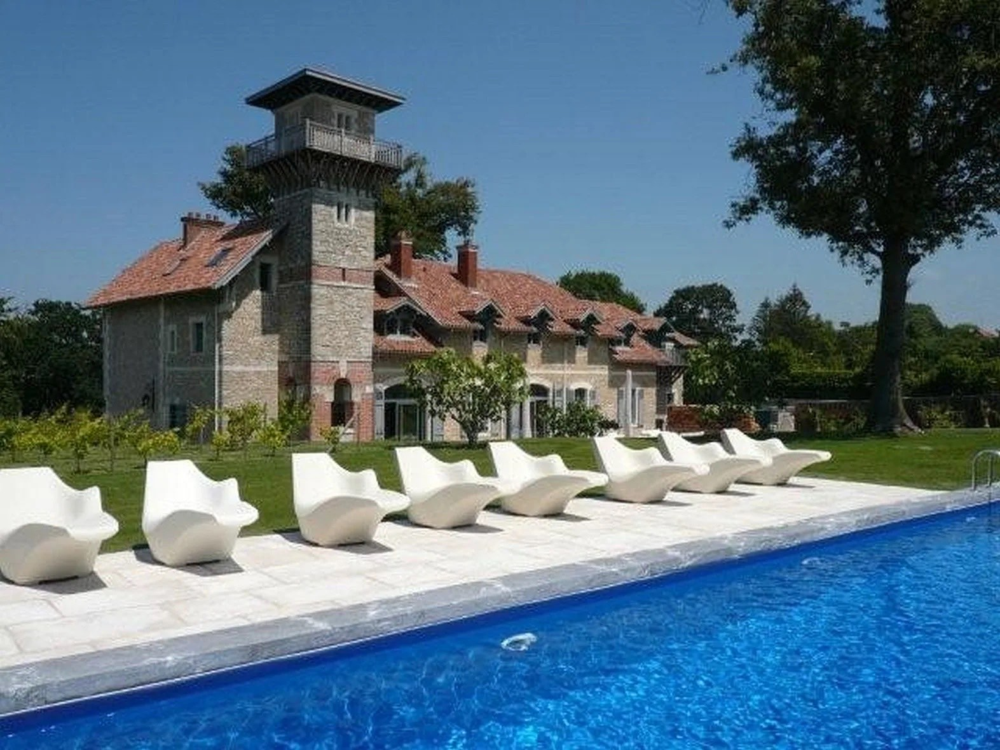
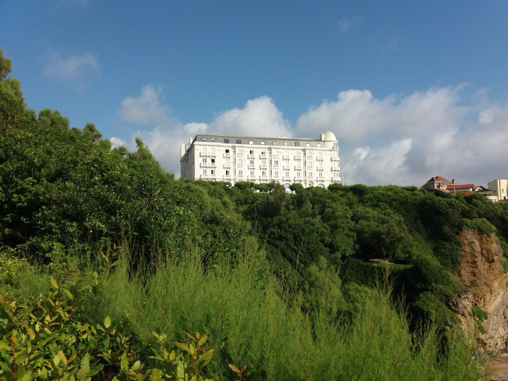
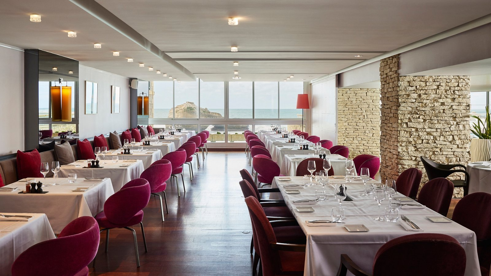
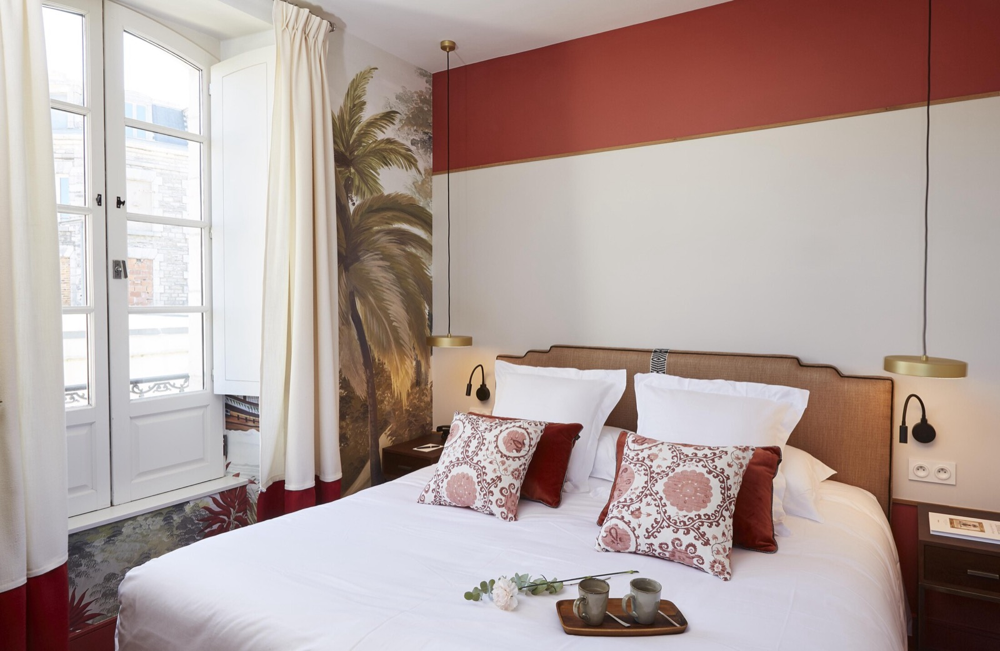

Les meilleurs hôtels de Biarritz : surf, luxe et Atlantique
Quatre kilomètres de front de mer, un palace classé, deux spots de surf de réputation
mondiale et une cuisine basque qui tient ses promesses. Huit adresses testées, notées,
et mesurées à un critère que personne d'autre n'applique : leur ancrage basque réel.
Par Swann Bertaud, rédacteur✺Publié le 21 juillet 2026✺16 min de lecture
L'Hôtel du Palais domine la Grande Plage depuis 1854 : ancienne résidence
impériale d'Eugénie de Montijo, seul palace de la côte atlantique française.
Photo : Christian David, CC BY-SA 4.0.
TL;DR : l'essentielLe podium biarrot 2026
Hôtel du Palais, 9,5/10 :
seul palace de la côte atlantique, Spa Impérial Guerlain de 2 500 m² sur quatre niveaux,
face à la Grande Plage. Sans équivalent.
Hôtel Beaumanoir, 8,8/10 :
un manoir de 1885 avec huit clés au total. Le plus confidentiel des 5 étoiles français.
Regina Experimental, 8,5/10 :
Belle Époque de 1907 réinventée par Dorothée Meilichzon. Le design le plus cohérent
de la ville.
La surprise : la Villa Koegui
(8,0/10), 4 étoiles à 122 €/nuit hors saison, qui décroche
4/5 à l'indice basque : colombage en façade, rouge basque signature,
petit-déjeuner à l'Ossau-Iraty et partenariat avec les écoles de surf. Elle fait aussi bien
qu'un palace à près de trois fois le prix, 342 € contre 122 € la nuit en basse saison. Et un avertissement : le score le plus
élevé du palmarès ne va pas de pair avec le meilleur rapport qualité-prix, c'est même
l'inverse.
La grille LMHS Destination et l'indice basque
Ce palmarès applique la grille LMHS Destination, la déclinaison du Protocole LMHS réservée à nos classements par ville ou par région. Elle note sur 10 et pondère cinq critères : rapport qualité-prix (25 %), un critère thématique adapté à l'objet du classement (25 %, ici l'ancrage basque), la localisation (20 %), le service (20 %) et les avis clients vérifiés (10 %). C'est la grille de nos palmarès de Lyon, de la Côte d'Azur et de la Provence.
Le critère thématique prend ici la forme de l'indice basque LMHS, noté sur 5, qui mesure l'ancrage régional réel sur cinq marqueurs : cuisine basque authentique servie sur place (pintxos, axoa, gâteau basque), architecture régionale assumée, partenariat avec une école de surf, produits locaux effectivement servis (piment d'Espelette, Ossau-Iraty, jambon de Bayonne) et vue Atlantique réelle depuis les chambres. Un hôtel peut être excellent sans être basque, le Beaumanoir en est la démonstration, avec 8,8/10 et seulement 3/5 à l'indice.
Le tableau : scores, prix et indice basque
Rang
Hôtel
Quartier
Cat.
Score LMHS
Indice basque
Basse saison
Haute saison
01
Hôtel du Palais
Grande Plage
Palace
9,5/10
4/5
342 €
1 737 €
02
Hôtel Beaumanoir
Parc d'Hiver
5★
8,8/10
3/5
250 €
666 €
03
Regina Experimental
Golf du Phare
5★
8,5/10
4/5
180 €
530 €
04
Sofitel Miramar Thalassa
Front de mer
5★
8,2/10
3/5
150 €
375 €
05
Hôtel de Silhouette
Les Halles
4★
8,0/10
4/5
159 €
575 €
06
Villa Koegui
Centre
4★
8,0/10
4/5
122 €
323 €
07
Hôtel Edouard VII
Centre
4★
7,5/10
3/5
89 €
255 €
08
Grand Tonic & Spa Nuxe
Côte des Basques
4★
7,0/10
3/5
89 €
372 €
Prix indicatifs chambre d'entrée de gamme par nuit, taxes non incluses.
L'Hôtel du Palais monte jusqu'à 7 430 € pour ses suites en haute saison.
Silhouette et Koegui sont à égalité de score : le classement les départage sur le rapport
qualité-prix, où la Villa Koegui l'emporte, mais le Silhouette prend la 5e place
sur la localisation et l'offre de restauration.
Sources : sites officiels, Booking.com, TripAdvisor, relevés en juillet 2026.
Notre sélection : les meilleurs hôtels de Biarritz
01
Hôtel du Palais, Grande Plage 9,5/10
Pour qui : couples en séjour prestige, anniversaires marquants, voyageurs qui veulent le seul palace de la côte atlantique sans compromis.
C'est le monument. Napoléon III le fait construire pour Eugénie de Montijo en 1854 ; reconstruit après incendie en 1903-1905 par l'architecte Édouard-Jean Niermans, il mêle Second Empire et Belle Époque dans une façade rouge et crème qui domine la Grande Plage. Depuis les chambres vue plage, le bruit des vagues entre par les fenêtres dès six heures du matin, dans une lumière atlantique rasante, presque blanche. Le Spa Impérial avec Guerlain déploie 2 500 m² sur quatre niveaux, neuf cabines de soins, piscine intérieure à contre-courant, solarium, jacuzzi, hammam, sauna, espace fitness, auxquels s'ajoute la piscine extérieure d'eau salée. Rien de comparable sur cette côte. Le restaurant Villa Eugénie sert une haute gastronomie autour de 130 € par convive ; La Rotonde, face à l'océan, est plus accessible et tout aussi spectaculaire. TripAdvisor : 4,6/5 sur plus de 2 100 avis. Membre de la Hyatt Unbound Collection.
Le bémol LMHS : le room service est franchement hors de prix, plusieurs avis récents évoquent 140 € pour deux plats, et l'absence de Netflix dans les chambres d'un palace à ce tarif reste inexplicable. Le rapport qualité-prix (4,1/5 sur TripAdvisor) est le point faible du palmarès : c'est l'hôtel le mieux noté et, en même temps, celui qui déçoit le plus sur ce critère.
1 avenue de l'Impératrice · Palace · Spa Impérial Guerlain 2 500 m² · Dès 342 €/nuit en basse saison · De 408 € à 1 737 € en haute saison, suites jusqu'à 7 430 € ·
Indice basque 4/5 ·
Site officiel →
02

Hôtel Beaumanoir, Parc d'Hiver 8,8/10
Pour qui : voyageurs qui veulent l'intimité d'un palace sans la foule. Lunes de miel, retraites, séjours ultra-confidentiels.
Le Beaumanoir est probablement le plus confidentiel des 5 étoiles français. Un manoir de 1885 niché dans un parc d'un hectare, à cinq minutes à pied de la Grande Plage, qui n'accueille que quatre chambres, deux suites et deux appartements, huit clés au total. Le style est baroque revisité : marbre de Rome, porcelaine de Limoges, cristal de Baccarat, parquets Versailles. Le Bar Dom Pérignon aligne plus de cinquante marques de champagne, le service est d'une discrétion absolue, majordome, transferts en Rolls-Royce sur demande, et la piscine de 25 m est chauffée en saison. On ne croise jamais personne : c'est tout l'objet. Noté 9,3/10 sur Booking, avec un bistro basque qui travaille de vrais produits régionaux.
Le bémol LMHS : pas de vue mer depuis les chambres, le parc est magnifique, mais l'Atlantique est absent, ce qui pèse lourd dans une ville où l'océan est l'argument principal. L'architecture, plus européenne que régionale, tire l'indice basque vers le bas. Quelques clients signalent l'absence de geste de bienvenue pour les séjours anniversaires, à ce niveau de prix.
10 avenue de Tamamès · 5★ · 8 clés · Dès 250 €/nuit en basse saison · De 481 € à 666 € en haute saison, appartement présidentiel jusqu'à 3 995 € ·
Indice basque 3/5 ·
Site officiel →
03

Regina Experimental, Golf du Phare 8,5/10
Pour qui : amateurs de design contemporain, couples en week-end prolongé, voyageurs qui veulent un hôtel avec une vraie identité visuelle.
La grande réussite design de Biarritz ces dernières années. En 2023, l'architecte Dorothée Meilichzon a transformé ce bâtiment Belle Époque de 1907, signé Henry Martinet, en un hôtel qui parle basque et atlantique sans jamais tomber dans le folklore. Motifs de cordage, tissus rayés marine, laques bleu sombre, sculptures en osier totémiques dans un atrium de quinze mètres de hauteur : tout évoque l'océan sans le nommer. Les 72 chambres et 13 suites jouent trois palettes, blanc, bleu, vert menthe, et les catégories supérieures donnent sur l'Atlantique ou sur le Golf du Phare. C'est le décor le plus cohérent de la ville, et le restaurant, avec un brunch qui fait l'unanimité, suit le même niveau.
Le bémol LMHS : depuis le rachat et la refonte du décor, des habitués de l'ancien Regina MGallery regrettent une perte d'âme. Le spa reste modeste pour un 5 étoiles, et les tarifs en haute saison, 424 à 530 €/nuit pour une chambre vue mer, sont élevés au regard du niveau de services.
Face au Golf du Phare · 5★ · 72 chambres et 13 suites · Dès 180 €/nuit en basse saison · De 334 € à 530 € en haute saison ·
Indice basque 4/5 ·
Site officiel →
04

Sofitel Miramar Thalassa Sea & Spa 8,2/10
Pour qui : curistes qui privilégient la thalassothérapie avant tout, couples bien-être, séjours médicalement encadrés face à l'Atlantique.
La référence thalasso de Biarritz. L'institut Thalassa Sea & Spa est directement relié à l'hôtel et propose des programmes de six nuits à partir de 1 926 € par personne : piscines d'eau de mer chauffées en été, parcours de marche à contre-courant, jacuzzi, soins marins. Les 126 chambres et suites de ce 5 étoiles disposent toutes d'une terrasse privative, avec vue sur l'océan ou sur la ville. Le chef Robert Job signe une bistronomie basque de saison, avec une carte bien-être pensée pour les curistes. L'emplacement, en front de mer avec accès direct à la plage, est incontestable, 4,7/5 sur TripAdvisor sur ce critère.
Le bémol LMHS : les avis récents sont trop convergents pour être ignorés, décoration vieillissante, piscine extérieure relevée à 24 °C au lieu des 27 °C annoncés, service inégal et parfois froid. Le rapport qualité-prix (3,7/5 sur TripAdvisor) est le plus faible de notre sélection. À ce tarif, on est en droit d'attendre mieux.
13 rue Louison Bobet · 5★ · 126 chambres · Dès 150 €/nuit en basse saison · Environ 375 € en haute saison, suites 1 350-1 400 € · Forfaits thalasso 6 nuits : 1 926-2 280 €/personne ·
Indice basque 3/5 ·
Site officiel →
05

Hôtel de Silhouette, Les Halles 8,0/10
Pour qui : voyageurs qui veulent vivre Biarritz comme un local, couples en week-end, amateurs de cuisine basque qui veulent dormir à côté du marché.
Voilà un hôtel qui sent vraiment Biarritz. Installé dans une demeure du XVIIe siècle à deux pas du marché des Halles, le Silhouette a été repensé par l'architecte Alicia Martin dans des teintes terracotta, brun tabac et rouge profond, tissus de la Maison Casa Lopez, fresques murales de palmiers, jardin privé pour les cocktails du soir. Les 21 chambres, dont six suites ouvertes en juin 2025 à la Maison Silhouette, sont insonorisées et climatisées ; certaines ont un balcon avec vue sur l'océan. La localisation face aux Halles est l'argument décisif : c'est là que Biarritz se vit vraiment, et le petit-déjeuner à 25 € travaille les produits du marché voisin. TripAdvisor : 4,8/5 sur l'emplacement, 4,7/5 sur la propreté.
Le bémol LMHS : pas de café en chambre, signalé par de nombreux voyageurs. Le Wi-Fi est instable dans certaines chambres et le service se relâche après 17 h le dimanche. Pas de spa sur place.
30 rue Gambetta · 4★ · 21 chambres · Dès 159 €/nuit en basse saison · De 340 € à 575 € en haute saison ·
Indice basque 4/5 ·
Site officiel →
06
Hôtel Villa Koegui, centre 8,0/10
Pour qui : couples, voyageurs solo, surfeurs qui veulent une base centrale sans payer le prix d'un palace.
Le Koegui est le boutique-hôtel qui conjugue le mieux design contemporain et ancrage basque. La façade intègre discrètement le colombage traditionnel, architectes Jean-Philippe Nuel et Bernard Signoret, tandis que l'intérieur, rénové en 2021 par l'Atelier Pascal L. fait du rouge basque sa couleur signature dans un univers minimaliste. Quinze chambres king-size avec douche à l'italienne ou baignoire, lounge avec cheminée, patio arboré, dans une rue calme à deux minutes des Halles, de la Grande Plage et du Casino. Le petit-déjeuner maison, gâteaux faits maison, fromages basques, Ossau-Iraty, jambon de Bayonne, est noté 9,4/10 sur Booking, le meilleur de notre sélection. Service exceptionnel : 4,7/5 sur TripAdvisor sur 725 avis. Avec 4/5 à l'indice basque pour 122 €/nuit hors saison, c'est le meilleur rapport ancrage/prix du palmarès.
Le bémol LMHS : les chambres sont petites pour qui a l'habitude des standards américains. Le Wi-Fi impose des reconnexions fréquentes. Ni piscine ni spa sur place, et pas de vue mer depuis les chambres.
7 rue de Gascogne · 4★ · 15 chambres · Dès 122 €/nuit en basse saison · De 200 € à 323 € en haute saison ·
Indice basque 4/5 ·
Site officiel →
07
Hôtel Edouard VII, centre-ville 7,5/10
Pour qui : voyageurs qui veulent un hôtel de charme central sans les tarifs des 5 étoiles, couples en week-end gastronomique, arrivées en train.
L'ancienne Villa des Rosiers, rebaptisée Edouard VII, est un hôtel de charme Art déco de dix-huit chambres entièrement rénovées, réparties en six catégories de 12 à 22 m², certaines avec balcon, toutes climatisées. Réception ouverte 24h/24, petit-déjeuner buffet à 15 €, frais et varié. L'emplacement, au cœur du quartier culinaire à 200 m du centre et 350 m de la plage la plus proche, est parfait pour explorer la ville à pied, et pour enchaîner les bars à pintxos le soir. Propreté irréprochable, notée 4,7/5 sur TripAdvisor.
Le bémol LMHS : pas de parking sur place, et le stationnement au parking Indigo voisin coûte 24 €/nuit. Les plus petites chambres, à 12 m², sont vraiment exiguës. Surtout, la grille tarifaire 2026 déclarée par l'établissement monte jusqu'à 290 € la nuit pour ses meilleures doubles en été, un plafond élevé rapporté à la taille des chambres.
21 avenue Carnot · 4★ · 18 chambres · Dès 89 €/nuit en basse saison · De 127 € à 255 € en haute saison ·
Indice basque 3/5 ·
Site officiel →
08
Grand Tonic Hôtel & Spa Nuxe, Côte des Basques 7,0/10
Pour qui : surfeurs, voyageurs au budget maîtrisé qui veulent quand même un spa, familles en séjour actif.
L'option la plus accessible du palmarès pour un hôtel avec spa. Soixante-quatre chambres dans un bâtiment Art déco rénové en 2022, panneaux solaires, bornes de recharge électrique, avec un spa Nuxe proposant piscine, sauna, hammam et soins, ce qui reste rare sur ce segment de prix. Les chambres mêlent design contemporain et touches classiques, avec trois styles de salles de bain, dont une en damier noir et blanc signée Putman. La proximité immédiate de la Côte des Basques en fait la meilleure base surf du classement, et il reste, à 89 €/nuit en basse saison, le seul 4 étoiles du palmarès à proposer un vrai spa à ce tarif.
Le bémol LMHS : les avis sur le spa sont très partagés, sauna en panne, hammam hors service, eau froide dans les jacuzzis ont été signalés à plusieurs reprises. La maintenance est le talon d'Achille de l'établissement, ce qui est problématique quand le spa constitue l'argument principal. Pas de vue mer depuis les chambres.
Proche Côte des Basques · 4★ · 64 chambres · Dès 89 €/nuit en basse saison · De 189 € à 372 € en haute saison ·
Indice basque 3/5 ·
Site officiel →
Le mot de SwannBiarritz en juillet ou en septembre ?
La question revient chaque été, et ma réponse est tranchée : septembre. Juillet à Biarritz, c'est magnifique, c'est aussi des dizaines de milliers de visiteurs supplémentaires sur quatre kilomètres de front de mer, des files d'attente le soir, des tarifs qui ont doublé depuis mai et une Grande Plage où trouver un carré de sable libre relève de l'exploit. Septembre, c'est autre chose : la houle atlantique atteint son maximum et les swells arrivent régulièrement sur la Côte des Basques et à Guéthary, l'eau reste à 19-20 °C, l'air à 20-22 °C, et les restaurants redeviennent accessibles sans réserver une semaine à l'avance. La ville retrouve son visage de tous les jours, les Basques reprennent leurs terrasses, le piment d'Espelette entre en récolte. Et les hôtels de ce palmarès affichent leurs meilleurs rapports qualité-prix de l'année. Si vous devez venir en juillet-août, réservez trois mois à l'avance et préférez le centre, Silhouette, Koegui, Edouard VII, aux adresses de front de mer, où les prix sont les plus volatils.
Swann Bertaud, rédacteur hôtellerie de luxe
Par style : quel Biarritz vous correspond
Le Biarritz impérial : palace et Belle Époque
Pour le palace dans toute sa splendeur historique, l'Hôtel du Palais (9,5/10) est la seule réponse : rien sur la côte atlantique française n'approche ce niveau de prestige architectural. Le Regina Experimental (8,5/10) est l'alternative design, la Belle Époque réinterprétée par une décoratrice contemporaine, à un tarif nettement plus accessible. Pour un luxe intime et confidentiel, le Beaumanoir (8,8/10) offre une expérience de manoir privé, huit clés, un parc, un service quasi personnalisé, qu'on ne trouve nulle part ailleurs en ville.
Le Biarritz thalasso : bien-être et océan
La thalasso à Biarritz, c'est le Sofitel Miramar (8,2/10), et rien d'autre : aucun autre établissement de la ville ne dispose d'un institut de thalassothérapie relié à l'hôtel avec accès direct à la plage. Les avis sont mitigés sur le service et l'état des équipements, mais pour une cure structurée sur six jours, c'est l'adresse incontournable, réservez en basse saison, les tarifs sont meilleurs et le service plus attentif. Pour un bien-être sans programme médical, le Grand Tonic & Spa Nuxe (7,0/10) fait l'affaire, sous réserve que les équipements fonctionnent le jour de votre séjour. Biarritz figure d'ailleurs dans notre palmarès des thalassos du sud de la France, seule adresse du Pays basque retenue.
Le Biarritz surf et design : boutique-hôtels
C'est ici que la ville se réinvente. La Villa Koegui (8,0/10) est notre coup de cœur : design minimaliste au rouge basque, service exceptionnel, petit-déjeuner de producteurs locaux et base parfaite pour rayonner vers la Côte des Basques. L'Hôtel de Silhouette (8,0/10), face aux Halles, est l'option la plus authentiquement biarrote, on y sent l'axoa et le piment d'Espelette dès le matin. Pour les surfeurs au budget serré, le Grand Tonic reste la base la mieux placée face au spot.
FAQ : les meilleurs hôtels de Biarritz
Quel est le meilleur hôtel de Biarritz en 2026 ?
Selon la grille LMHS Destination, l'Hôtel du Palais reste la référence absolue avec 9,5/10 et un indice basque de 4/5. C'est le seul palace de la côte atlantique française, construit pour l'Impératrice Eugénie en 1854, avec un Spa Impérial Guerlain de 2 500 m² sur quatre niveaux. Pour un rapport qualité-prix plus accessible, le Regina Experimental (8,5/10, dès 180 €) ou la Villa Koegui (8,0/10, dès 122 €) sont d'excellentes alternatives.
Quel hôtel choisir à Biarritz pour une cure thalasso ?
Le Sofitel Biarritz Le Miramar Thalassa Sea & Spa est la seule vraie réponse : c'est le seul établissement de la ville doté d'un institut de thalassothérapie relié à l'hôtel, avec des programmes de six nuits à partir de 1 926 € par personne. Attention toutefois : les avis récents signalent un décor vieillissant et une qualité de service inégale, et son rapport qualité-prix est le plus faible de notre palmarès.
Quand faut-il réserver un hôtel à Biarritz ?
Septembre est la période idéale selon LMHS : la houle atlantique est au maximum, l'eau reste à 19-20 °C, les prix baissent de 30 à 40 % et la ville retrouve une atmosphère locale. Juillet-août est la haute saison absolue, avec des tarifs qui doublent voire triplent et les meilleures chambres vue mer réservées des mois à l'avance. Novembre à mars offre les tarifs les plus bas, mais certains hôtels réduisent leurs services.
Y a-t-il des hôtels de luxe à Biarritz avec vue sur l'océan ?
Oui. L'Hôtel du Palais est le plus spectaculaire, avec ses chambres face à la Grande Plage. Le Sofitel Miramar offre une terrasse privative à chacune de ses 126 chambres, avec vue océan ou ville. Le Regina Experimental propose des chambres donnant sur l'Atlantique ou sur le Golf du Phare. À noter : le Beaumanoir et la Villa Koegui, malgré leurs excellents scores, n'ont pas de vue mer, un point à vérifier avant de réserver.
Biarritz est-elle une bonne destination pour le surf ?
Absolument. Biarritz est considérée comme la capitale européenne du surf depuis les années 1950, quand des soldats américains ont introduit la pratique sur la Côte des Basques. Ce spot reste emblématique pour les débutants et les intermédiaires ; pour les confirmés, Guéthary (15 km) et Hossegor (40 km) offrent des vagues de classe mondiale. Le Grand Tonic et la Villa Koegui proposent des partenariats avec des écoles de surf locales. La meilleure période reste septembre-octobre, quand les swells atlantiques sont les plus réguliers.
Méthode et sources
8 établissements retenus sur la soixantaine que compte Biarritz. Grille LMHS Destination, notée sur 10 : rapport qualité-prix (25 %), ancrage basque (25 %), localisation (20 %), service (20 %), avis clients vérifiés (10 %). L'indice basque LMHS, noté sur 5, est calculé séparément sur cinq marqueurs vérifiables : cuisine basque servie sur place, architecture régionale, partenariat école de surf, produits locaux effectivement proposés, vue Atlantique réelle depuis les chambres. Aucun partenariat commercial, aucune affiliation. Tarifs relevés en juillet 2026 sur les sites officiels, Booking.com et TripAdvisor, chambre d'entrée de gamme, taxes non incluses. Les caractéristiques du Spa Impérial (2 500 m², quatre niveaux, neuf cabines) et la capacité du Sofitel Miramar (126 chambres, 5 étoiles) ont été vérifiées sur les sites officiels Guerlain, Hyatt et Accor. Photographies : Wikimedia Commons, Hôtel du Palais (Christian David, CC BY-SA 4.0), Regina (Romainbehar, CC0).